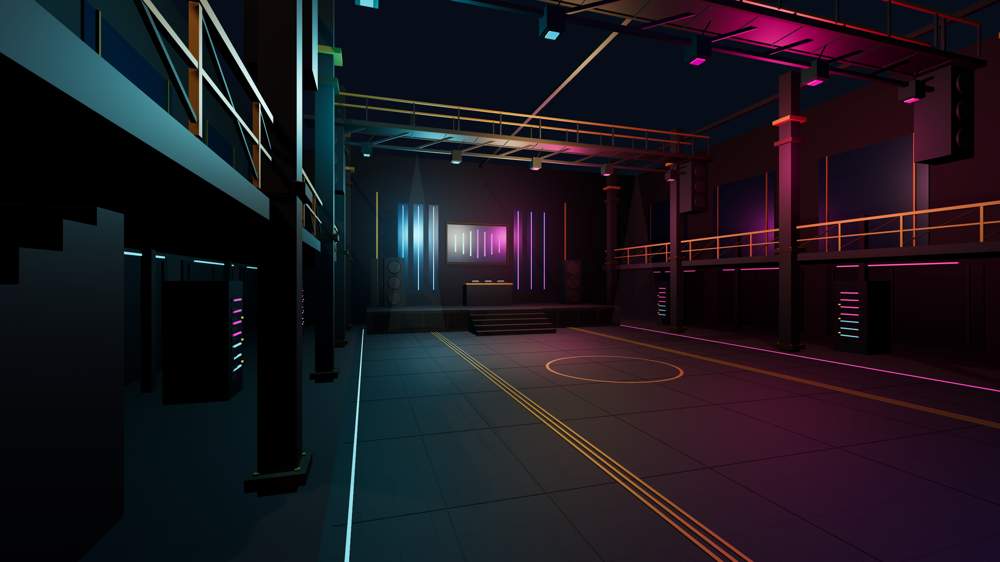
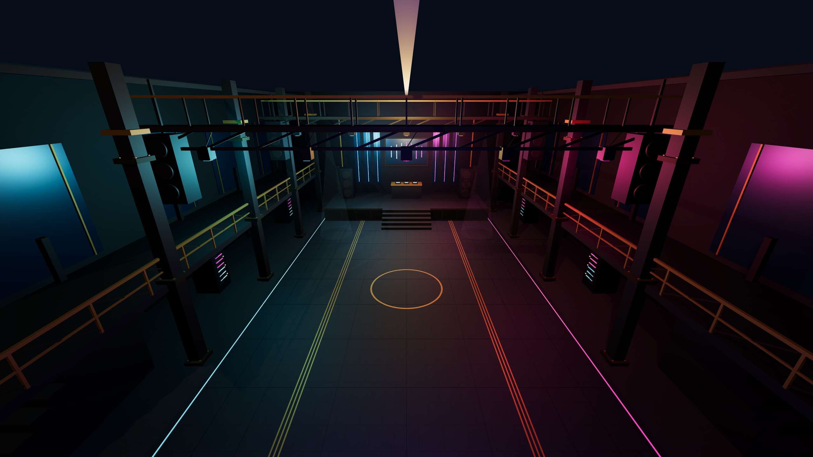
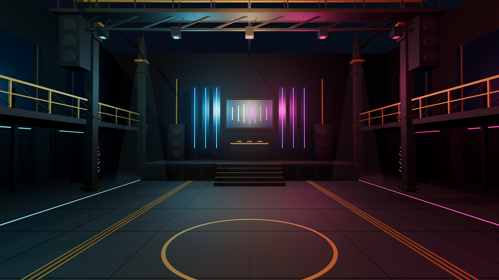
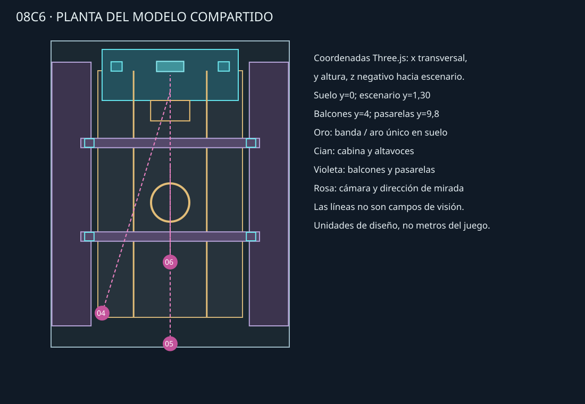

Propuesta técnica, no arte final. Los renders conservan la geometría y cámaras de 08C5, pero todavía tienen aspecto de maqueta y no alcanzan el acabado artístico requerido.
Informe y reproducción · Escena editable en WebGL · Modelo GLB · Planta · Comparativa anterior 08C5
PNG de 2560 × 1440 nativos. Solo cambia la cámara; no se cambian objetos, luces ni materiales entre vistas.




Hormigón, metal, obsidiana y dorado usan materiales procedimentales; se añadieron remaches, cerchas, paneles, racks, una pantalla abstracta y juntas de pavimento. Un foco direccional genera sombras; los haces son conos estilizados, no volumetría física.
La geometría sigue viéndose simplificada, los materiales no alcanzan calidad final y la sala carece de actividad. No se han probado el sprite ni logo oficiales. El GLB puede abrirse en un editor, pero no reproduce toda la iluminación del visor: usar la escena web para renderizar.